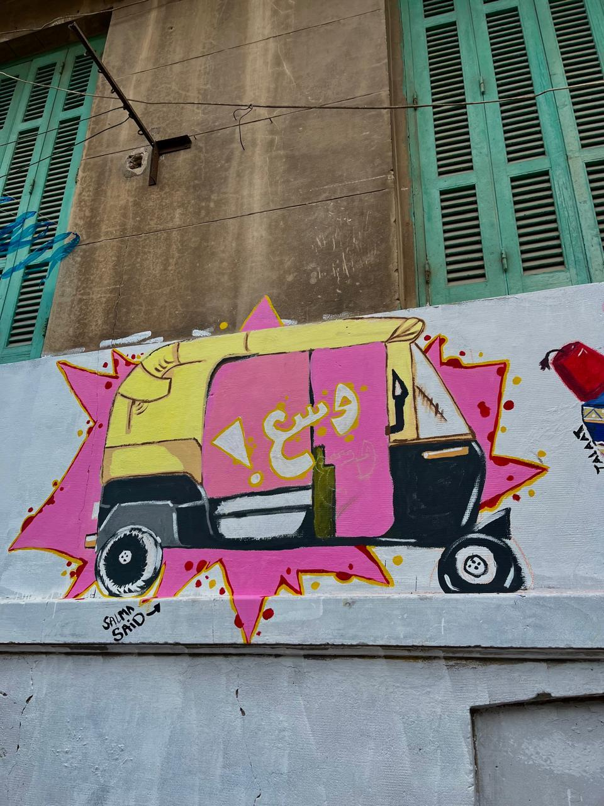
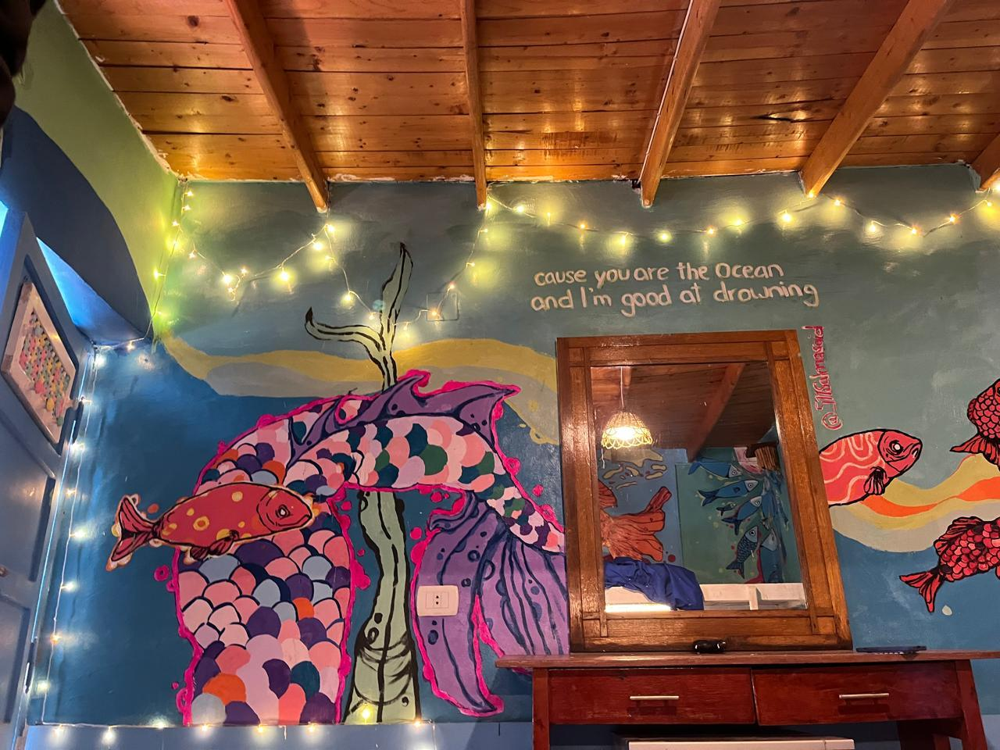
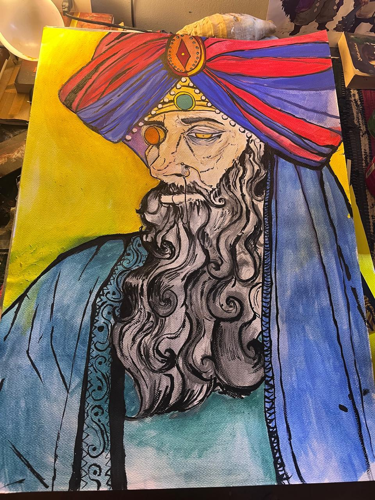
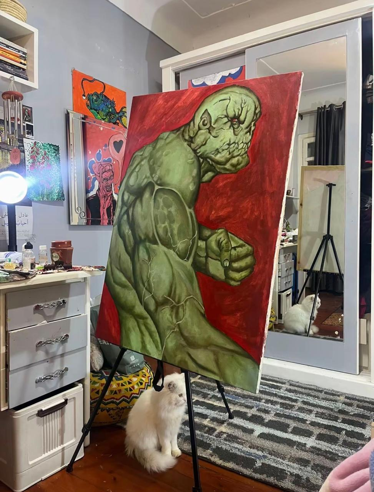
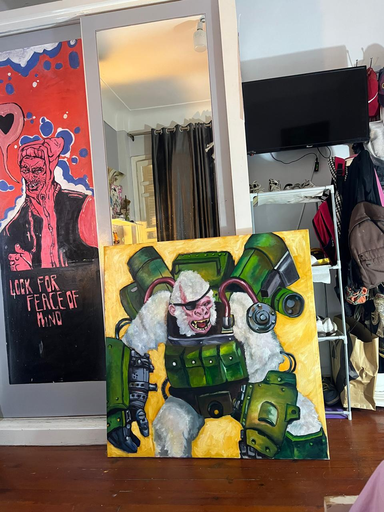

Murals & Wall Paintings

"Wase'!" Tuk-Tuk Mural
Street mural — Kom El-Deka

"Cause You Are The Ocean"
Hand-lettered wall mural — Dahab
Oil Paintings on Canvas

The Turbaned Elder
Mixed media on canvas

Armored Figure, Red Ground
Oil on canvas

Mech Primate
Oil on canvas